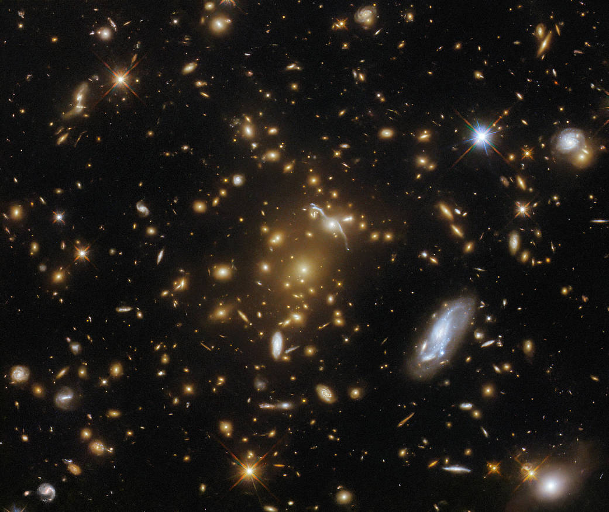
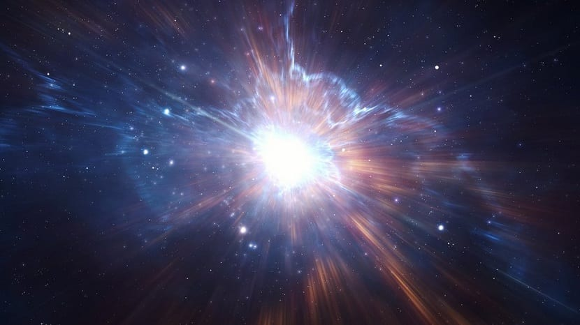
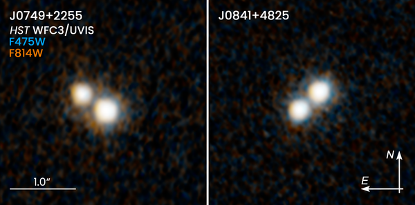

주간탐사
Hot Topic
 |
암흑 에너지는 존재할까? |
알려지지 않은 속성을 가진 가상의 힘으로서의 암흑 에너지의 위상은 그것을 매우 활발한 연구 대상이 된다. 이 문제는 우세한 중력 이론(일반 상대성이론)을 수정하기, 암흑 에너지의 특성의 명확한 설명을 시도하기 및 관측 데이터를 설명할 대안적 방법 찾기와 같은 다양한 각도로부터 공격을 받는다. |
|---|
Topic List
 |
우주가속팽창이론 '틀렸다'vs'맞다' |
우주가 점점 빨리 팽창하고 있다는 유명한 천체물리학 이론인 우주가속팽창이론과 이를 뒷받침하는 '암흑에너지'의 존재에 의문을 제기한 연구 결과가 나왔다. 가속팽창을 확인한 중요한 관측의 기본 가정이 틀렸다는 새 증거가 공식적으로 학계에 제기됐다. |
|---|---|---|
 |
우주는 균일하게 팽창하지 않는다? |
천문학자들은 수십 년 동안 우주가 모든 방향에서 같은 속도로 팽창하고 있다고 추정해왔다. 그러나 유럽과 미국 과학자들로 이뤄진 국제연구팀의 새로운 관측 데이터는 이 우주론의 핵심 전제가 틀릴 수도 있음을 시사한다. |
 |
우리가 사는 우주 너머 다른 우주 있을까? |
일부 과학자들은 그 경계 너머에 우리 우주와는 또 다른 우주가 밤하늘 별처럼 셀 수 없을 정도로 존재한다는 다중우주 가설을 내놓고 있다. 우리 우주를 거대한 거품에 비교하면 그런 거품이 수도 없이 많다는 것이다. |